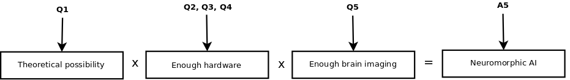

For this first-stage calculation, we used a simple model, assuming that if:
Then someone will build a neuromorphic AI.
We get these probabilities from your answers as follows:

Your answers from Q2 and Q3 are combined to estimate the price to purchase enough computer hardware to produce neuromorphic AI for various times in the future. Combined with the amount of money available for the largest projects from Q4, this gives us the probability that enough computer power will be available for neuromorphic AI at different years.
Finally, the probability that AI is possible in principle is multiplied with the probability that enough computer hardware will be available in different years and with the probability that we will have sufficient brain imaging technology to construct neuromorphic AI at various points in the future. The result is the probability that neuromorphic AI has been created at different years.
Click here for in-depth math details.